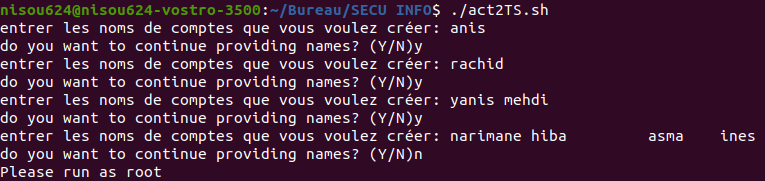

Script qui utilise un fichier qui contiens des noms pour créer un compte utilisateur
Générer clé privé et publique propre a chaque utilisateur et les mettres dans "/home/$user/KEYS"
Puis créer un fichier "/PUBKEYS" qui contiens les clés de tous les utilisateurs
Ce script shell crée des comptes d'utilisateurs Linux avec des noms fournis en entrée par l'utilisateur.
Nous commençons par définir la variable "stp" sur "false" et démarrons une boucle "while".
Cette boucle continuera tant que la valeur de "stp" est "false". A chaque tour de boucle, l'utilisateur est invité à entrer un nom de compte.
Ce nom est alors ajouté à la fin du fichier "act2/names.txt".
Ensuite, l'utilisateur est invité à répondre à la question « Voulez-vous continuer à fournir des noms ? avec "Y" pour continuer ou "N" pour arrêter.
Si l'utilisateur saisit une réponse autre que "O" ou "N", un message d'erreur s'affiche.
#!/bin/bash
stp=false
while [ "$stp" = false ]; do
read -p "entrer les noms de comptes que vous voulez créer: " blaze
echo $blaze >> "act2/names.txt"
read -p "do you want to continue providing names? (Y/N)" yn
case $yn in
[yY] ) ;;
[nN] ) stp=true;;
* ) echo "réponse invalide";;
esac
done
Le code obtiendra les noms d'utilisateur à partir d'un fichier texte et créera de nouveaux comptes d'utilisateurs sur l'ordinateur.
Le script commence par définir la variable "filename" sur la valeur "names.txt".
Ensuite, le script définit l'IFS (Internal Field Separator) sur les caractères de tabulation et de saut de ligne. Cela signifie que le script divisera chaque ligne du fichier lu en plusieurs éléments.
La boucle "while" parcourt chaque ligne du fichier "names.txt", divisant la ligne en éléments individuels à l'aide du caractère IFS et ajoutant chaque élément non vide à la liste des noms stockés dans la variable "names".
La variable IFS est effacée.
filename="names.txt"
IFS=$'\t\n '
names=()
while read -ra line; do
for name in "${line[@]}"; do
if [ -n "$name" ]; then
names+=("$name")
fi
done
done < "act2/$filename"
unset IFS
Le code vérifie si le script s'exécute en tant que superutilisateur, puis crée des comptes d'utilisateurs en utilisant les noms dans le fichier "names.txt".
Pour chaque nom, le script crée un compte d'utilisateur avec le nom d'utilisateur et le mot de passe, crée un répertoire pour stocker les clés de chiffrement de cet utilisateur et crée une paire de clés RSA pour l'utilisateur.
Les clés sont stockées dans le répertoire et une copie de la clé publique est également stockée dans un fichier nommé "user_name.pubkey" dans le répertoire "act2".
Enfin, le script définit les autorisations pour les comptes d'utilisateurs et les fichiers en fonction des exigences de sécurité standard.
if [ "$EUID" -ne 0 ]
then echo "Please run as root"
exit
fi
echo "Names in file $filename:"
for name in "${names[@]}"; do
username="$name"
password="$name"
useradd -m -s /bin/bash $name
echo "$name:$name" | chpasswd
echo "User account created successfully"
mkdir -p "/home/$name/KEYS"
openssl genrsa -out "/home/$name/KEYS/pkey" 4096
openssl rsa -in "/home/$name/KEYS/pkey" -pubout -out "/home/$name/KEYS/pubkey"
openssl rsa -in "/home/$name/KEYS/pkey" -pubout -out "act2/'$name'.pubkey"
chmod 700 "/home/$username/KEYS"
chmod 600 "/home/$username/KEYS/pkey"
chmod 644 "/home/$username/KEYS/pubkey"
chmod 644 "act2/'$name'.pubkey"
done
insertion des noms des comptes qu'on souhaites créer.
Quand on execute pas en tant que root on reçoit cette erreur:
 Pour resoudre cela on précede la commande ./act2TS.sh par sudo
Le résultat ressemblera alors a ça:
Quand on excute le script apres voir rempli déjà le fichier noms.txt et qu'on veut plus le remplir il suffit de laisser vide lorsqu'il vous demande d'entrer un nom et cela marchera quand même
Création des utilisateurs et leurs clés.

Contenu du répértoire /home/
les nouveaux utlisateurs crée a partir du fichier "names.txt"

répértoire PUBKEYS qui contiens toutes les clés publique
Quand on veut acceder au fichier "/home/$user/KEYS"

Cela est du a ce bout de code:
chmod 700 "/home/$username/KEYS"
chmod 600 "/home/$username/KEYS/pkey"
chmod 644 "/home/$username/KEYS/pubkey"
chmod 644 "act2/'$name'.pubkey"